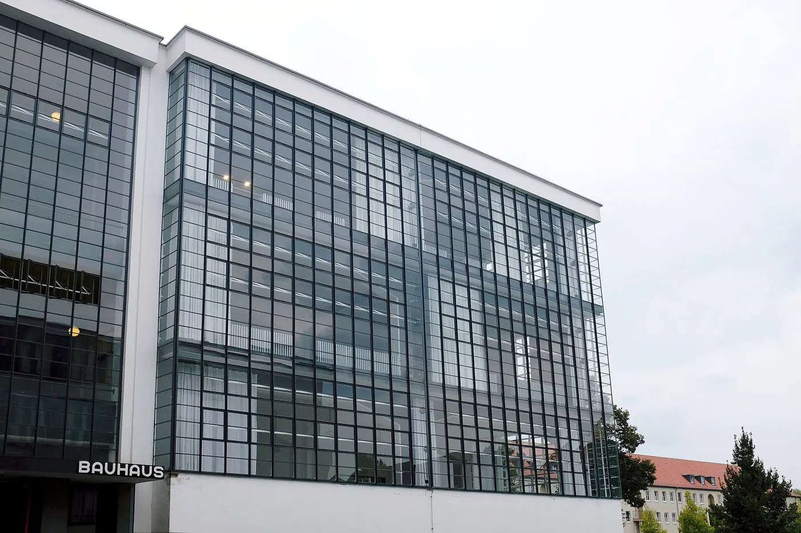
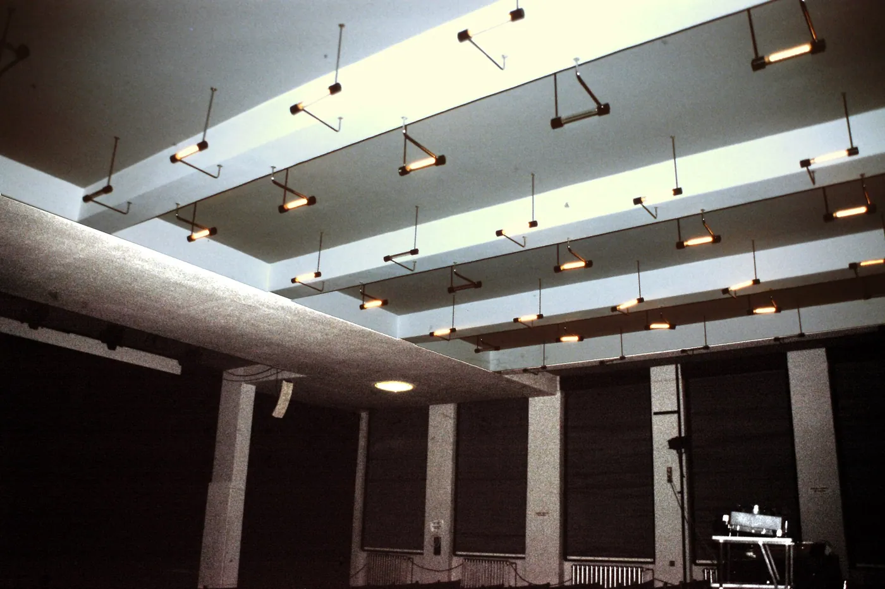
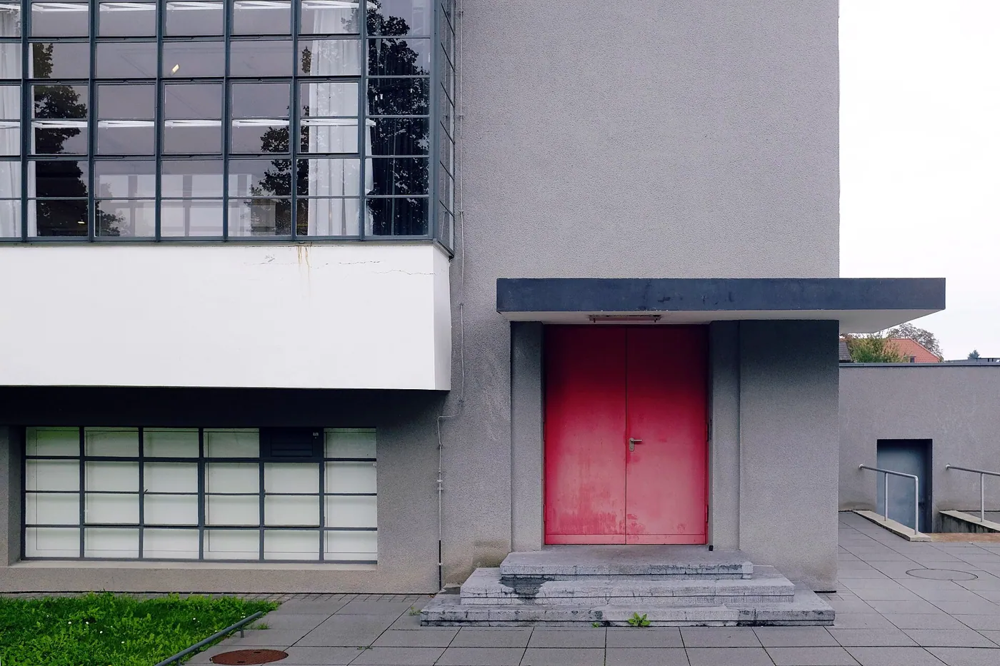
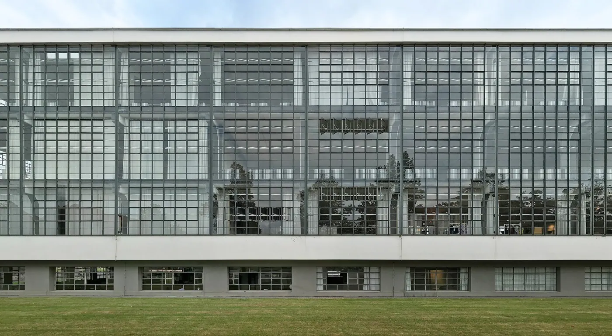

1/8 · Exterior · Meisterhäuser-BauhausPhoto: Michael aus Halle · CC BY-SA 3.0 · source2/8 · Exterior · Dessau-BauhausPhoto: Spyrosdrakopoulos · CC BY-SA 4.0 · source3/8 · Exterior · Dessau-BauhausPhoto: Spyrosdrakopoulos · CC BY-SA 4.0 · source
4/8 · Exterior · Dessau-BauhausPhoto: Spyrosdrakopoulos · CC BY-SA 4.0 · source
5/8 · Interior · Soffittenlampen Aula, Bauhaus DessauPhoto: James Steakley · CC BY-SA 4.0 · source6/8 · Interior · Bauhaus Dessau: Fassade des Werkstattflügels von innenPhoto: Dirk Bindmann · CC BY-SA 4.0 · source
7/8 · Detail · Dessau-BauhausPhoto: Spyrosdrakopoulos · CC BY-SA 4.0 · source
8/8 · Detail · Bauhaus Dessau, Gropiusallee Ecke Bauhausstraße, Dessau-Roßlau, Vorhangfassade WerkstättenflügelPhoto: Gunnar Klack · CC BY-SA 4.0 · source Education · Modernism
Bauhaus Dessau
Walter Gropius · Dessau, Germany · 1926
Key featuresA pinwheel plan, with a glass curtain wall wrapping the workshops.
- Architect
- Walter Gropius
- Place
- Dessau, Germany
- Year
- 1926
- Typology
- Education
- Movement
- Modernism
- Region
- Europe
See it on the wall